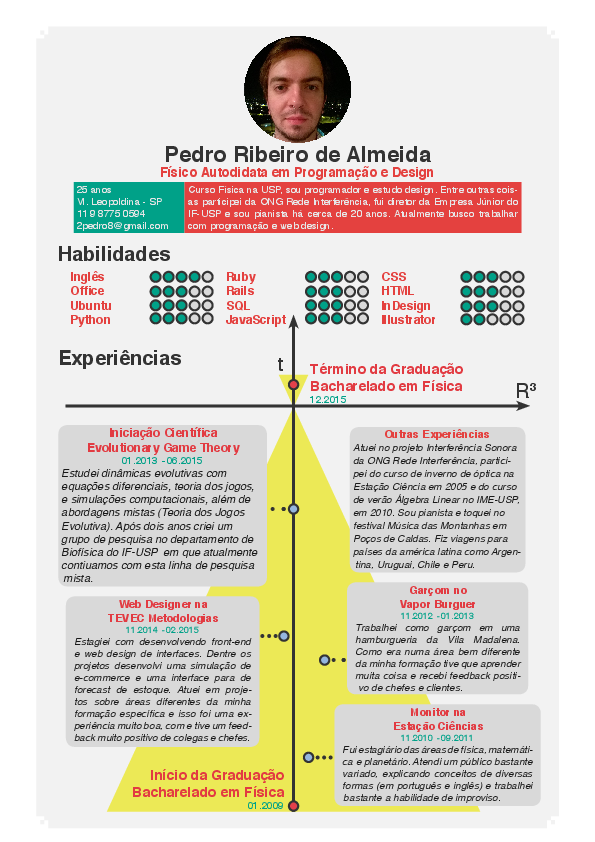
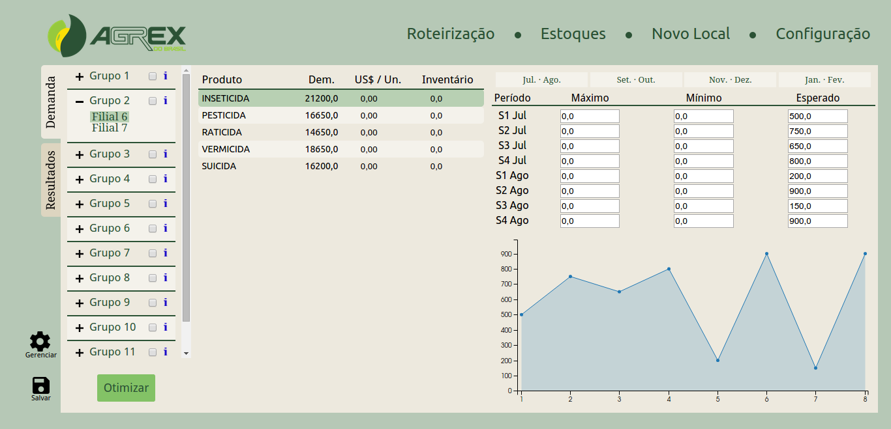
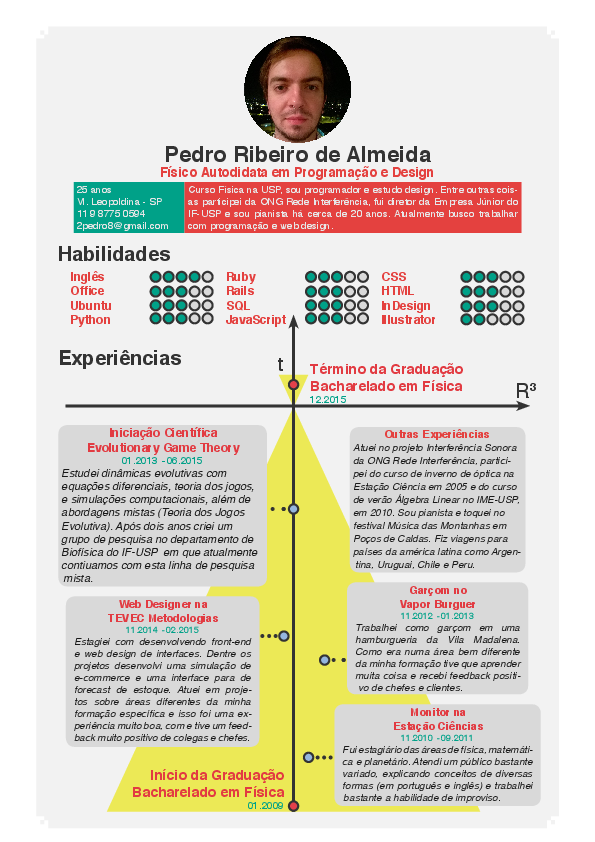
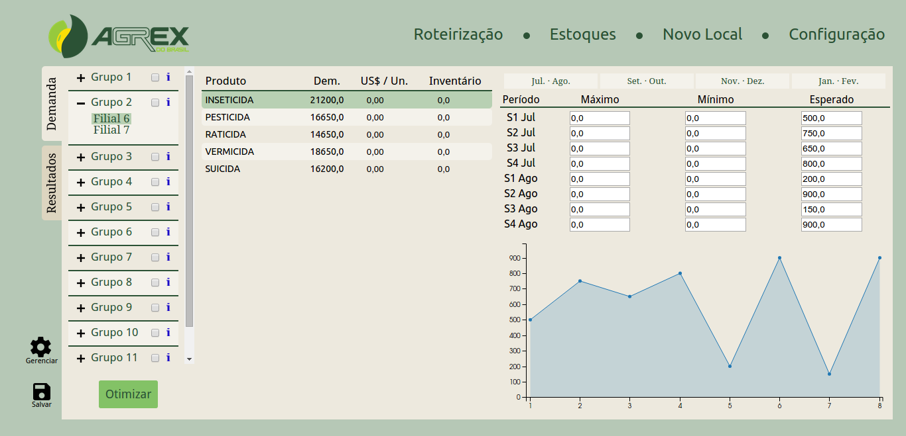

SOBRE
Curso Física na USP, sou programador e estudo design.
Boa parte do que está neste portifólio eu aprendi de maneira independente, lendo livros, vendo tutoriais, pesquisando em fóruns, perguntando para amigos e tentando desenvolver cada vez mais um bom senso.
Ademais, sou pianista (algumas das minhas composições estão disponíveis no soundcloud), gosto de cozinhar, jogar online, desenhar as pessoas durante a aula e dançar.
Para mais informações, entre em contato através do meu e-mail: 2pedro8@gmail.com
Boa parte do que está neste portifólio eu aprendi de maneira independente, lendo livros, vendo tutoriais, pesquisando em fóruns, perguntando para amigos e tentando desenvolver cada vez mais um bom senso.
Ademais, sou pianista (algumas das minhas composições estão disponíveis no soundcloud), gosto de cozinhar, jogar online, desenhar as pessoas durante a aula e dançar.
Para mais informações, entre em contato através do meu e-mail: 2pedro8@gmail.com
DESIGN
 



CODING
Estudo Web Development há um ano seguintto o ótimo currículo do site Odin Project e boa parte do que fiz está no GitHub
Vou destacar aqui algumas coisas específicas que considero interessantes e os respecctivos links. Além disso, os sites da seção Design foram desenvolvidos por mim.
Vou destacar aqui algumas coisas específicas que considero interessantes e os respecctivos links. Além disso, os sites da seção Design foram desenvolvidos por mim.